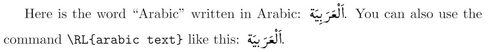
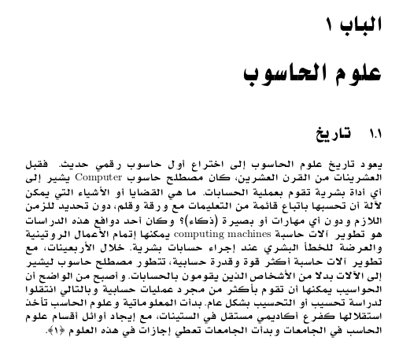

Arabic
Introduction
In this article we explain how to typeset Arabic using the arabtex package with pdfLaTeX. However, the underlying pdfTeX engine (software), which typesets/processes your pdfLaTeX document, has relatively limited support for typesetting complex-script languages such as Arabic, Hebrew, Devanagari or Malayalam. Typesetting such languages requires more complete support of Unicode-based text input, the use of OpenType fonts and other capabilities which are not present in pdf(La)TeX.
Many authors are mandated to use pdfLaTeX due to requirements of their workflow, but if you are able to choose the LaTeX compiler, the modern approach to typesetting Arabic is to use XeLaTeX (XeTeX engine) or LuaLaTeX (LuaHBTeX engine). LuaLaTeX, via LuaHBTeX, provides the most advanced and complete TeX-based solutions for complex-script language typesetting. See these pages about polyglossia and babel.
Notes on the arabtex package
Klaus Lagally started work on the arabtex package in 1991, primarily as a personal project—see Appendix B of the package documentation. Its genesis and early development predates the advent of pdfTeX by around 5 years and LuaHBTeX and XeTeX by more than a decade—and long before the rise of Unicode and OpenType fonts. The arabtex package is a tour-de-force of complex TeX programming, but many core component files now date from circa 2003, meaning that the age of the arabtex package can give rise to incompatibilities with current versions of LaTeX or LaTeX packages.
A first arabtex example
The following basic example uses the arabtex package to typeset a single word in Arabic:
\documentclass[a4paper,10pt]{article}
\usepackage{arabtex}
\usepackage{utf8}
\setcode{utf8}
\begin{document}
Here is the word ``Arabic'' written in Arabic: \<اَلْعَرَبِيَّةُ>. You can also use the command \verb|\RL{arabic text}| like this: \RL{اَلْعَرَبيَّةُ}.
\end{document}
Open this pdfLaTeX and arabtex example in Overleaf.
This example produces the following output:

Note that the arabic text used with command \RL{arabic text} should not contain more than a single paragraph of right-to-left text.
arabtex: transliteration or UTF-8 input
The arabtex package supports the ability to typeset Arabic text by writing it using a particular form of transliteration: representing Arabic text using the Latin script. Here's a fragment from an example in the arabtex documentation—note how the Arabic text is represented in Latin text, which is converted to Arabic:
\documentclass[12pt]{article}
\usepackage{arabtex}
\begin{document}
\setarab % choose the language specific conventions
\vocalize % switch diacritics for short vowels on
%\transtrue % display the transliteration
\arabtrue % print arabic text (on by default)
\centerline {\RL{^gu.hA wa-.himAruhu}} % typeset a centred line of Arabic text
\begin{RLtext}
fa-qAla lahu ^gu.hA:
.garIbuN 'amruka yA .sadIqI!
'a-tu.saddiqu al-.himAra wa-tuka_d_dibunI?
\end{RLtext}
\end{document}
Open this pdfLaTeX and arabtex example in Overleaf.
This example produces the following output:
If we want arabtex to use actual Arabic text as input, not transliterated Latin text, we have to tell arabtex to use UTF-8 input instead, by writing
\usepackage{utf8}
\setcode{utf8}
The utf8 package is part of the arabtex package.
A second arabtex example
The following example contains a more substantial piece of Arabic text which also contains some words in English:
\documentclass[a4paper,10pt]{article}
\usepackage{arabtex}
\usepackage{utf8}
\begin{document}
\setcode{utf8}
Here is the word ``Arabic'' written in Arabic: \<اَلْعَرَبِيَّةُ>. You can also use the command \verb|\RL{arabic text}| like this: \RL{اَلْعَرَبيَّةُ}.
\vspace{10pt}
Here is a larger section of Arabic, containing some words in English within the \verb|\LR| command:
\vspace{10pt}
\begin{RLtext}
يعود تاريخ علوم الحاسوب إلى اختراع أول حاسوب رقمي حديث. فقبل العشرينات من القرن العشرين، كان مصطلح حاسوب \LR{Computer} يشير إلى أي أداة بشرية تقوم بعملية الحسابات. ما هي القضايا أو الأشياء التي يمكن لآلة أن تحسبها باتباع قائمة من التعليمات مع ورقة وقلم، دون تحديد للزمن اللازم ودون أي مهارات أو بصيرة (ذكاء)؟ وكان أحد دوافع هذه الدراسات هو تطوير آلات حاسبة \LR{computing machines} يمكنها إتمام الأعمال الروتينية والعرضة للخطأ البشري عند إجراء حسابات بشرية.
خلال الأربعينات، مع تطوير آلات حاسبة أكثر قوة وقدرة حسابية، تتطور مصطلح حاسوب ليشير إلى الآلات بدلا من الأشخاص الذين يقومون بالحسابات. وأصبح من الواضح أن الحواسيب يمكنها أن تقوم بأكثر من مجرد عمليات حسابية وبالتالي انتقلوا لدراسة تحسيب أو التحسيب بشكل عام. بدأت المعلوماتية وعلوم الحاسب تأخذ استقلالها كفرع أكاديمي مستقل في الستينات، مع إيجاد أوائل أقسام علوم الحاسب في الجامعات وبدأت الجامعات تعطي إجازات في هذه العلوم [1].
\end{RLtext}
\end{document}
Open this pdfLaTeX and arabtex example in Overleaf.
An arabtex example also using babel
The following examples uses arabtex together with the babel and inputenc packages, for reasons that will be noted below.
\documentclass[11pt,a4paper]{report}
\usepackage[utf8]{inputenc}
\usepackage{arabtex}
%\usepackage[LAE]{fontenc} %Not needed due to [arabic] option of the babel package
\usepackage[arabic]{babel}
\title{
\Huge\textsc{اللغة العربية}
}
\author{سالم البوزيدي}
\begin{document}
\maketitle
\tableofcontents
\chapter{علوم الحاسوب}
\section{تاريخ}
\begin{otherlanguage}{arabic}
يعود تاريخ علوم الحاسوب إلى اختراع أول حاسوب رقمي حديث. فقبل العشرينات من القرن العشرين، كان مصطلح حاسوب \textLR{Computer} يشير إلى أي أداة بشرية تقوم بعملية الحسابات. ما هي القضايا أو الأشياء التي يمكن لآلة أن تحسبها باتباع قائمة من التعليمات مع ورقة وقلم، دون تحديد للزمن اللازم ودون أي مهارات أو بصيرة (ذكاء)؟ وكان أحد دوافع هذه الدراسات هو تطوير آلات حاسبة \textLR{computing machines} يمكنها إتمام الأعمال الروتينية والعرضة للخطأ البشري عند إجراء حسابات بشرية.
خلال الأربعينات، مع تطوير آلات حاسبة أكثر قوة وقدرة حسابية، تتطور مصطلح حاسوب ليشير إلى الآلات بدلا من الأشخاص الذين يقومون بالحسابات. وأصبح من الواضح أن الحواسيب يمكنها أن تقوم بأكثر من مجرد عمليات حسابية وبالتالي انتقلوا لدراسة تحسيب أو التحسيب بشكل عام. بدأت المعلوماتية وعلوم الحاسب تأخذ استقلالها كفرع أكاديمي مستقل في الستينات، مع إيجاد أوائل أقسام علوم الحاسب في الجامعات وبدأت الجامعات تعطي إجازات في هذه العلوم [1].
\end{otherlanguage}
\end{document}
Open this Arabic text example in Overleaf

Input encoding
To support a variety of input encodings for different groups of languages and/or on different computer platforms LaTeX employs the inputenc package. Prior to the release of TeX Live 2018, using UTF-8 encoded text with pdfLaTeX required the inputenc package by writing
\usepackage[utf8]{inputenc}
in your document's preamble.
As noted in the Overleaf blog post TeX Live upgrade—September 2019, LaTeX has switched to UTF-8 as the default input encoding; consequently, it is now not usually necessary to explicitly write \usepackage[utf8]{inputenc} if you are using a post-2018 release of TeX Live. However, for the above example writing \usepackage[utf8]{inputenc} is still required.
Language-specific document elements
The arabic option of the babel package provides support for the Arabic language:
\usepackage[arabic]{babel}
which includes bidirectional typesetting and use of Arabic names for document elements. If you need to insert some Latin text inside your Arabic document, you use the \textLR{...} command; for example, by writing
\textLR{Latin text}
Font encoding
In addition to using the correct input encoding, typesetting a LaTeX document, containing Arabic text, requires fonts with the appropriate correct output encoding to provide the glyphs (shapes) which represent typeset Arabic. Typesetting the example above needs the equivalent of writing
\usepackage[LAE]{fontenc}
but, as noted in this reply on tex.stackexchange, using the arabic option of babel results in loading the required LAE encoding files laeenc.def and laeenc.dfu.
Further reading
For more information see
- Multilingual typesetting on Overleaf using polyglossia and fontspec
- Multilingual typesetting on Overleaf using babel and fontspec
- Supporting modern fonts with XƎLaTeX
- Typesetting quotations and quotation marks
- International language support
- Chinese
- French
- German
- Greek
- Italian
- Japanese
- Korean
- Portuguese
- Russian
- Spanish
- The not so short introduction to LaTeX2ε
- LaTeX/Internationalization on WikiBooks
- LaTeX/Special_Characters on WikiBooks
Overleaf guides
- Creating a document in Overleaf
- Uploading a project
- Copying a project
- Creating a project from a template
- Using the Overleaf project menu
- Including images in Overleaf
- Exporting your work from Overleaf
- Working offline in Overleaf
- Using Track Changes in Overleaf
- Using bibliographies in Overleaf
- Sharing your work with others
- Using the History feature
- Debugging Compilation timeout errors
- How-to guides
- Guide to Overleaf’s premium features
LaTeX Basics
- Creating your first LaTeX document
- Choosing a LaTeX Compiler
- Paragraphs and new lines
- Bold, italics and underlining
- Lists
- Errors
Mathematics
- Mathematical expressions
- Subscripts and superscripts
- Brackets and Parentheses
- Matrices
- Fractions and Binomials
- Aligning equations
- Operators
- Spacing in math mode
- Integrals, sums and limits
- Display style in math mode
- List of Greek letters and math symbols
- Mathematical fonts
- Using the Symbol Palette in Overleaf
Figures and tables
- Inserting Images
- Tables
- Positioning Images and Tables
- Lists of Tables and Figures
- Drawing Diagrams Directly in LaTeX
- TikZ package
References and Citations
- Bibliography management with bibtex
- Bibliography management with natbib
- Bibliography management with biblatex
- Bibtex bibliography styles
- Natbib bibliography styles
- Natbib citation styles
- Biblatex bibliography styles
- Biblatex citation styles
Languages
- Multilingual typesetting on Overleaf using polyglossia and fontspec
- Multilingual typesetting on Overleaf using babel and fontspec
- International language support
- Quotations and quotation marks
- Arabic
- Chinese
- French
- German
- Greek
- Italian
- Japanese
- Korean
- Portuguese
- Russian
- Spanish
Document structure
- Sections and chapters
- Table of contents
- Cross referencing sections, equations and floats
- Indices
- Glossaries
- Nomenclatures
- Management in a large project
- Multi-file LaTeX projects
- Hyperlinks
Formatting
- Lengths in LaTeX
- Headers and footers
- Page numbering
- Paragraph formatting
- Line breaks and blank spaces
- Text alignment
- Page size and margins
- Single sided and double sided documents
- Multiple columns
- Counters
- Code listing
- Code Highlighting with minted
- Using colours in LaTeX
- Footnotes
- Margin notes
Fonts
Presentations
Commands
Field specific
- Theorems and proofs
- Chemistry formulae
- Feynman diagrams
- Molecular orbital diagrams
- Chess notation
- Knitting patterns
- CircuiTikz package
- Pgfplots package
- Typesetting exams in LaTeX
- Knitr
- Attribute Value Matrices
Class files
- Understanding packages and class files
- List of packages and class files
- Writing your own package
- Writing your own class